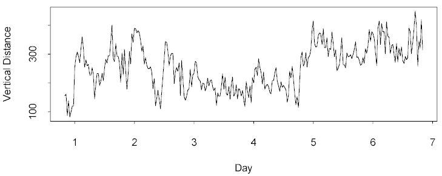

| / Home |
Keywords: periodicities, non-parametric trend
Tidal shrimps from the Brisbane River move up and down the tidal area (harbour pylon for example) in accordance with the movement of the tides. In this experiment shrimps were removed from their natural environment and isolated from environmental stimulae which would allow them to measure time. Their vertical position on an inclined slope was recorded every half hour starting 20 hours after removal and continuing for one week. Also recorded is the actual tide height during the same period, and six other measures of the shrimps' activity.
| Variable | Description | ||
| Time | Hours since isolation | ||
| Vertical | Vertical displacement from original position | ||
| Y2 - Y7 | Other activity measurements | ||
| Tide | Actual tide height | ||
Data file (tab-delimited text)
| Yong Yuan, Department of Biology, University of Queensland. |
The data need to be detrended non-parametrically, and then searched for periodicities. The periodic behaviour of the shrimps' movement gradually breaks up over the week.

|
Home - About Us -
Contact Us Copyright © Gordon Smyth |